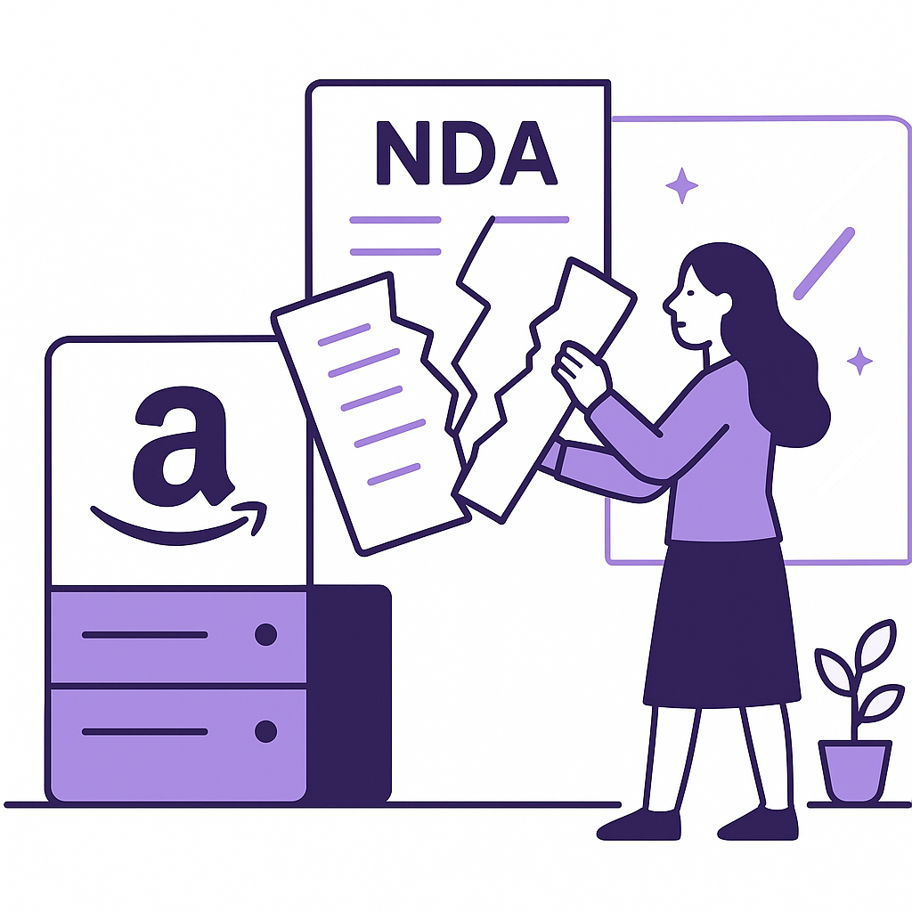

Publishing Recommendation
publishToday's drafted posts are well-aligned with Purands AI's brand voice, offering practical insights on AI's role in customer retention and data management. Each post effectively leverages current trends without exaggerating AI capabilities. The content is clear, concise, and provides actionable insights, making it ready for publishing. No factual inaccuracies or brand risks were identified, ensuring the posts maintain credibility and respect for the audience's intelligence.
LinkedIn Posts (10)
1. Consumer AI Use a Boon for Holidays as AI Traffic Doubles ★ Purands solution · high priority
CTA: How are you planning to leverage AI this holiday season?
Caption: AI Traffic During Holiday Seasons
Alternative hooks
- Here's a number that stands out: AI traffic doubled during the holiday season.
- During the holidays, AI traffic doesn't just increase - it doubles.
- Peak shopping times reveal a surprise: AI-driven interactions are on the rise.
Research behind this post (sources, summaries & confidence)
Consumer AI Use a Boon for Holidays as AI Traffic Doubles conf 0.70 · AI in business
The significant increase in AI usage during the holiday season indicates a shift towards AI-driven customer interactions, which can enhance retention through personalized experiences.
Sources & what I took from each
- AI traffic doubled during the holiday season.: Retail Dive reports on the increase in AI traffic, suggesting a trend towards more AI-driven interactions in consumer markets. ↗ read source
Statistics
- AI traffic doubling during holidays as reported.
Examples
- Increased use of AI chatbots and recommendation systems during holiday shopping.
Original trend links
Risks / caveats
- Possible over-reliance on AI could lead to customer dissatisfaction if systems fail.
- Privacy concerns with increased data usage during peak times.
2. Microsoft AI's MAI-Transcribe-2 Streaming Model ★ Purands solution · high priority
CTA: How do you see speech-to-text technology changing your business communication?
Alternative hooks
- Imagine you're running a busy e-commerce platform in the APAC region.
- Communication with customers isn't just important, it's critical.
- By integrating this model into your customer engagement channels, you can provide faster, more accurate responses.
Research behind this post (sources, summaries & confidence)
Microsoft AI's MAI-Transcribe-2 Streaming Model conf 0.70 · AI in business
Advancements in AI speech-to-text technology can significantly enhance customer interaction channels, crucial for businesses aiming to improve communication and engagement.
Sources & what I took from each
- Microsoft's new AI model offers improved speech-to-text capabilities.: VentureBeat highlights the model's improvements in price and speed over competitors. ↗ read source
Statistics
- No specific statistics found.
Examples
- Businesses could utilize the model for better customer service through enhanced communication tools.
Original trend links
Risks / caveats
- Potential competition from other advanced AI models.
- Integration challenges with existing business systems.
3. Meta Debuts AI Agent for Small Businesses ★ Purands solution · high priority
CTA: How are you currently using AI to enhance customer engagement?
Alternative hooks
- Meta's AI agent is shaking up retention marketing.
- What does Meta's new AI agent mean for small business engagement?
- How can AI agents revolutionize small business customer interactions?
Research behind this post (sources, summaries & confidence)
Meta Debuts AI Agent for Small Businesses conf 0.60 · AI startups
Meta's launch of an AI agent to assist small businesses is critical for retention marketing as it highlights innovation in AI-driven customer engagement solutions, a key component of retention strategies.
Sources & what I took from each
- Meta launched an AI agent for small businesses.: The source from Retail Dive discusses Meta's release of an AI agent aimed at improving customer engagement for small businesses. ↗ read source
Statistics
- No specific statistics found in the source.
Examples
- Meta's AI agent can be integrated into existing small business platforms to enhance service.
Original trend links
Risks / caveats
- Potential for limited adoption if small businesses lack the technical capacity to integrate new AI tools.
- Privacy concerns related to data handling by AI agents.
4. Apple Changes Full-Disk Access Permissions ★ Purands solution · high priority
CTA: How are you adapting your CRM strategy to these new data regulations?
Alternative hooks
- Apple's new data permissions could disrupt your CRM.
- How will Apple's security updates impact your customer data management?
- Is your CRM ready for Apple's latest data access changes?
Research behind this post (sources, summaries & confidence)
Apple Changes Full-Disk Access Permissions conf 0.60 · CRM strategy
Changes to data access can significantly affect how customer data is managed and integrated across CRM systems, impacting lifecycle messaging strategies.
Sources & what I took from each
- Apple changes full-disk access permissions.: Ars Technica reports on Apple's adjustments to permissions to enhance security. ↗ read source
Statistics
- No specific statistics found.
Examples
- CRM systems may need to adapt to new data access regulations.
Original trend links
Risks / caveats
- Potential disruption in CRM operations due to changes in data access.
- Increased complexity in managing data permissions.
5. KnitWell Group Names Chief Digital and Customer Data Officer ★ Purands solution · high priority
CTA: How is your business integrating customer data into strategy?
Alternative hooks
- KnitWell Group's new appointment signals a data-driven future.
- Why is data becoming the heart of customer retention?
- Can customer data really transform retention strategies?
Research behind this post (sources, summaries & confidence)
KnitWell Group Names Chief Digital and Customer Data Officer conf 0.60 · Customer Data Platforms
The appointment signifies a trend towards emphasizing data-driven strategies and the importance of customer data platforms in enhancing customer insights and retention.
Sources & what I took from each
- KnitWell appoints a Chief Digital and Customer Data Officer.: Retail Dive reports on the strategic appointment, highlighting a focus on digital and data strategies. ↗ read source
Statistics
- No specific statistics found.
Examples
- Enhanced focus on leveraging customer data for business growth.
Original trend links
Risks / caveats
- Potential challenges in effectively integrating data strategies across the organization.
- Risk of data privacy issues if not managed properly.
6. Improper Redaction Reveals Google Data Center Usage
CTA: How do you ensure your data handling practices are foolproof?
Alternative hooks
- Improper redaction exposed Google's data center usage details.
- A data leak at a Google center shows the cost of poor data management.
- Google's slip-up is a stark reminder of data privacy stakes.
Research behind this post (sources, summaries & confidence)
Improper Redaction Reveals Google Data Center Usage conf 0.80 · Customer Data Platforms
The leak of data center usage highlights the critical importance of data privacy and management, a key concern for customer data platforms handling sensitive customer information.
Sources & what I took from each
- Data leak reveals Google data center usage details.: Source discusses the implications of improper redaction leading to a data leak, raising privacy concerns. ↗ read source
Statistics
- No specific statistics found.
Examples
- Increased scrutiny over data center operations and privacy practices.
Original trend links
Risks / caveats
- Potential regulatory backlash and increased scrutiny on data privacy.
- Reputational damage to involved companies.
7. Google Freezes Open Source Bug Bounty Program
CTA: How do you think companies should address AI-related security threats?
Alternative hooks
- Last week, Google put a freeze on its open source bug bounty program.
- AI vulnerabilities are reshaping tech security. Just ask Google.
- Google's latest move reveals a critical challenge with AI in tech.
Research behind this post (sources, summaries & confidence)
Google Freezes Open Source Bug Bounty Program conf 0.70 · AI industry
The suspension due to AI submissions indicates the growing impact of AI on tech operations and security, relevant for understanding AI's role in modern business environments.
Sources & what I took from each
- Google froze its open source bug bounty program due to AI submissions.: TechCrunch reports on Google's response to an increase in AI-related vulnerabilities. ↗ read source
Statistics
- No specific statistics found.
Examples
- Increased AI vulnerabilities prompting changes in security programs.
Original trend links
Risks / caveats
- Potential impact on open-source contributions and security research.
- Challenges in managing AI-related security threats.
8. Amazon Ends NDAs Amid Data Center Backlash
CTA: How do you think this move by Amazon will influence other tech companies?

⬇ Download image
Image prompt · isometric-flat
Caption: Amazon's Transparency Shift
Alternative hooks
- In a bold move, Amazon just stopped using NDAs for data centers.
- Amazon's decision to end NDAs marks a shift towards transparency.
- Data transparency just took center stage with Amazon's latest policy change.
Research behind this post (sources, summaries & confidence)
Amazon Ends NDAs Amid Data Center Backlash conf 0.70 · AI in business
The decision to stop using NDAs comes at a time of increased scrutiny over data practices, reinforcing the need for transparency in AI-driven business operations.
Sources & what I took from each
- Amazon ends the use of NDAs in response to data center backlash.: TechCrunch covers Amazon's policy change, indicating a shift towards more transparency. ↗ read source
Statistics
- No specific statistics found.
Examples
- Potential changes to industry standards regarding data transparency.
Original trend links
Risks / caveats
- May set a precedent for other companies to increase transparency.
- Could lead to increased scrutiny and pressure on other tech firms.
9. DeepSeek Harness v0.2 Brings Official Desktop Apps
CTA: Have you tried integrating AI tools into your desktop workflow? What challenges or benefits have you experienced?
Alternative hooks
- Remember when AI tools were mostly confined to cloud environments?
- Desktop apps for AI tools: a game-changer or just another feature?
- How do desktop apps change the AI development game?
Research behind this post (sources, summaries & confidence)
DeepSeek Harness v0.2 Brings Official Desktop Apps conf 0.60 · Product management
The launch of desktop applications for open-source AI agent harnesses reflects the growing trend of democratizing AI tools, which can enhance product management and development of AI features.
Sources & what I took from each
- Launch of desktop applications for AI agent harness.: Source confirms the release of desktop apps, indicating a trend towards more accessible AI tools. ↗ read source
Statistics
- No statistics available.
Examples
- Developers can now use AI tools on desktop environments, enhancing accessibility.
Original trend links
Risks / caveats
- Potential technical issues in transitioning AI tools to desktop environments.
- User adaptation and acceptance challenges.
10. OpenAI Safety Employee Resigns
CTA: Have you seen similar cultural challenges in tech startups? How were they addressed?
Alternative hooks
- A resignation from OpenAI's safety team is making waves.
- Culture issues in tech startups can be a double-edged sword.
- Why did an OpenAI employee resign over 'cultural issues'?
Research behind this post (sources, summaries & confidence)
OpenAI Safety Employee Resigns conf 0.60 · AI startups
The resignation highlights culture issues within AI startups, crucial for understanding the dynamics and challenges in this rapidly evolving sector.
Sources & what I took from each
- OpenAI safety employee resigns citing culture issues.: TechCrunch reports on the resignation and the concerns raised about OpenAI's internal culture. ↗ read source
Statistics
- No specific statistics found.
Examples
- Potential challenges in maintaining a positive company culture in rapidly growing tech firms.
Original trend links
Risks / caveats
- Negative impact on company reputation and future employee retention.
- Potential scrutiny on AI ethics and governance practices.
Today's Trends
| # | Trend | Category | Why it matters |
|---|---|---|---|
| 1 | Meta Debuts AI Agent for Small Businesses
source |
AI startups | Meta's launch of an AI agent to assist small businesses is critical for retention marketing as it highlights innovation in AI-driven customer engagement solutions, a key component of retention strategies. |
| 2 | WhatsApp AI Commerce Platform Backend
source |
WhatsApp commerce | This development indicates a growing trend of leveraging WhatsApp for commerce, which is particularly relevant in the APAC region where mobile-first strategies are prevalent. |
| 3 | Consumer AI Use a Boon for Holidays as AI Traffic Doubles
source |
AI in business | The significant increase in AI usage during the holiday season indicates a shift towards AI-driven customer interactions, which can enhance retention through personalized experiences. |
| 4 | Lifecycle OS — Retention/Lifecycle-Marketing Platform
source |
Retention marketing | The development of an open-source retention marketing platform underscores the importance of lifecycle marketing in increasing customer retention, a core focus for platforms like Purands AI. |
| 5 | Shopify Loyalty & Rewards App
source |
Shopify ecosystem | The introduction of new loyalty and rewards applications within the Shopify ecosystem highlights the ongoing need for effective retention strategies to maintain customer engagement. |
| 6 | DeepSeek Harness v0.2 Brings Official Desktop Apps
source |
Product management | The launch of desktop applications for open-source AI agent harnesses reflects the growing trend of democratizing AI tools, which can enhance product management and development of AI features. |
| 7 | Improper Redaction Reveals Google Data Center Usage
source |
Customer Data Platforms | The leak of data center usage highlights the critical importance of data privacy and management, a key concern for customer data platforms handling sensitive customer information. |
| 8 | Google Freezes Open Source Bug Bounty Program
source |
AI industry | The suspension due to AI submissions indicates the growing impact of AI on tech operations and security, relevant for understanding AI's role in modern business environments. |
| 9 | Apple Changes Full-Disk Access Permissions
source |
CRM strategy | Changes to data access can significantly affect how customer data is managed and integrated across CRM systems, impacting lifecycle messaging strategies. |
| 10 | Amazon Ends NDAs Amid Data Center Backlash
source |
AI in business | The decision to stop using NDAs comes at a time of increased scrutiny over data practices, reinforcing the need for transparency in AI-driven business operations. |
| 11 | OpenAI Safety Employee Resigns
source |
AI startups | The resignation highlights culture issues within AI startups, crucial for understanding the dynamics and challenges in this rapidly evolving sector. |
| 12 | KnitWell Group Names Chief Digital and Customer Data Officer
source |
Customer Data Platforms | The appointment signifies a trend towards emphasizing data-driven strategies and the importance of customer data platforms in enhancing customer insights and retention. |
| 13 | Microsoft AI's MAI-Transcribe-2 Streaming Model
source |
AI in business | Advancements in AI speech-to-text technology can significantly enhance customer interaction channels, crucial for businesses aiming to improve communication and engagement. |
| 14 | Aleph Alpha Releases Kolibri Model
source |
AI in business | The release of a new language model with enhanced efficiency highlights ongoing innovations in AI, which can impact customer data processing and analysis capabilities. |
Risk Assessment
No risks flagged.
Suggested LinkedIn Comments (30)
Open each post, then paste the copied comment. Nothing is posted automatically.
1. insight · rss:techcrunch.com — AI slop seems to be overwhelming bug bounty programs.
Post by: rss:techcrunch.com
Why it works: It addresses the specific problem mentioned and suggests a constructive path forward, adding depth to the discussion.
↗ Open LinkedIn post to paste comment2. opinion · rss:techcrunch.com — On Equity, we discussed the Trump administration's attempts to rebrand AI.
Post by: rss:techcrunch.com
Why it works: The comment provides a nuanced view, acknowledging both potential benefits and pitfalls, which adds depth to the conversation.
↗ Open LinkedIn post to paste comment3. expansion · rss:techcrunch.com — Welcome back to TechCrunch Mobility, your hub for the future of transportation a
Post by: rss:techcrunch.com
Why it works: It adds a broader perspective by highlighting sustainability, which is crucial for future transportation discussions.
↗ Open LinkedIn post to paste comment4. respectful challenge · rss:techcrunch.com — This new task force is Trump's latest response to the debate over AI safety.
Post by: rss:techcrunch.com
Why it works: The comment challenges the initiative's potential superficiality, prompting deeper reflection on its effectiveness.
↗ Open LinkedIn post to paste comment5. insight · rss:techcrunch.com — A federal judge ruled that a sheriff’s deputy violated a woman’s Fourth Amendmen
Post by: rss:techcrunch.com
Why it works: It highlights the broader implications of the ruling, stressing the importance of ethical governance.
↗ Open LinkedIn post to paste comment6. opinion · rss:techcrunch.com — The CEO of Amazon Web Services tried to push back against widespread suspicion o
Post by: rss:techcrunch.com
Why it works: The comment suggests a constructive action AWS can take, adding value to the discussion on data center perception.
↗ Open LinkedIn post to paste comment7. insight · rss:techcrunch.com — By his own admission, David Robinson is “something of a cliché”: an employee at
Post by: rss:techcrunch.com
Why it works: The comment validates the role of whistleblowers, emphasizing their importance in steering ethical AI development.
↗ Open LinkedIn post to paste comment8. expansion · rss:techcrunch.com — Bitchat has become largely unavailable in India as a result of the restrictions.
Post by: rss:techcrunch.com
Why it works: It broadens the conversation by considering the implications of regulatory actions on digital freedoms.
↗ Open LinkedIn post to paste comment9. insight · rss:techcrunch.com — Vessev hopes its electric hydrofoil ferry will change the way people and cities
Post by: rss:techcrunch.com
Why it works: It focuses on practical challenges and potential impacts, adding a layer of critical thinking to the innovation's promise.
↗ Open LinkedIn post to paste comment10. insight · rss:techcrunch.com — We created a list of the most notable AI agents that can live in your text messa
Post by: rss:techcrunch.com
Why it works: It acknowledges the trend while pointing out the importance of balancing functionality with privacy, adding depth to the post.
↗ Open LinkedIn post to paste comment11. opinion · rss:www.theverge.com — We don't know a ton about the Fitbit Edge, but it appears to be a successor to t
Post by: rss:www.theverge.com
Why it works: The comment provides a clear opinion on the strategic positioning of the Fitbit Edge in the market.
↗ Open LinkedIn post to paste comment12. insight · rss:www.theverge.com — While deep in the recording process for The Downward Spiral, Trent Reznor lent s
Post by: rss:www.theverge.com
Why it works: The comment adds depth by focusing on the producer's role, aligning with the post's subject about artistic collaboration.
↗ Open LinkedIn post to paste comment13. insight · rss:www.theverge.com — It’s not even October yet and Amazon is already offering some Prime Big Deal Day
Post by: rss:www.theverge.com
Why it works: The comment provides a strategic analysis of Amazon's early discount approach, adding a layer of marketing insight.
↗ Open LinkedIn post to paste comment14. opinion · rss:www.theverge.com — New Jersey's lieutenant governor Dale Caldwell was forced to resign on September
Post by: rss:www.theverge.com
Why it works: The comment directly addresses the ethical implications of the situation, offering a firm stance on leadership accountability.
↗ Open LinkedIn post to paste comment15. insight · rss:www.theverge.com — StarSkirmish pits AI-made StarCraft-playing bots against one another, as well as
Post by: rss:www.theverge.com
Why it works: The comment provides a perspective on the strengths of human creativity versus AI capabilities in strategic games.
↗ Open LinkedIn post to paste comment16. insight · rss:www.theverge.com — This toolless modular lever-action wallet is the coolest I've stuck to my phone.
Post by: rss:www.theverge.com
Why it works: The comment emphasizes practical innovation, connecting with the post's focus on simple yet effective design improvements.
↗ Open LinkedIn post to paste comment17. insight · rss:www.theverge.com — It’s been a while since we’ve seen a good discount on the Apple AirPods Pro 3, b
Post by: rss:www.theverge.com
Why it works: The comment links sales timing to product lifecycle strategy, offering a business perspective on consumer tech discounts.
↗ Open LinkedIn post to paste comment18. insight · rss:www.theverge.com — Amazon’s October Prime Day has effectively chopped off Apple’s June price increa
Post by: rss:www.theverge.com
Why it works: The comment highlights consumer strategy, giving practical advice on purchasing decisions during sales events.
↗ Open LinkedIn post to paste comment19. insight · rss:www.theverge.com — Apple bumped up prices on several of its devices in June, and we haven’t seen a
Post by: rss:www.theverge.com
Why it works: The comment analyzes the business strategy behind discounting older tech models, adding a layer of market insight.
↗ Open LinkedIn post to paste comment20. insight · rss:www.theverge.com — Google didn't even call the first Chromebook a "Chromebook." The Cr-48 had no in
Post by: rss:www.theverge.com
Why it works: The comment provides historical context, explaining how early prototypes can shape future tech landscapes.
↗ Open LinkedIn post to paste comment21. insight · rss:feeds.arstechnica.com — Wunmi Mosaku (<em>Sinners, Loki</em>) narrates NatGeo's new documentary <em>Afri
Post by: rss:feeds.arstechnica.com
Why it works: Connects the use of celebrity voices to documentary success, adding value to the post by highlighting a strategic media practice.
↗ Open LinkedIn post to paste comment22. expansion · rss:feeds.arstechnica.com — The IEA and climate negotiators want to set a target for shifting the economy to
Post by: rss:feeds.arstechnica.com
Why it works: Broadens the discussion by highlighting the dual challenge of technological and infrastructural change needed for economic electrification.
↗ Open LinkedIn post to paste comment23. insight · rss:feeds.arstechnica.com — "...we were making history."
Post by: rss:feeds.arstechnica.com
Why it works: Offers a reflective take on the nature of historical progress, adding depth to the excerpt's quote.
↗ Open LinkedIn post to paste comment24. opinion · rss:feeds.arstechnica.com — The devices continue to show noticeable benefits for users in various real-world
Post by: rss:feeds.arstechnica.com
Why it works: Emphasizes the importance of practical utility in tech development, aligning with the excerpt's theme of real-world benefits.
↗ Open LinkedIn post to paste comment25. respectful challenge · rss:feeds.arstechnica.com — Meta says FDA isn't sufficient to Muse reading messages. Apple begs to differ.
Post by: rss:feeds.arstechnica.com
Why it works: Challenges the adequacy of current regulatory frameworks, adding a critical perspective to the conversation.
↗ Open LinkedIn post to paste comment26. insight · rss:feeds.arstechnica.com — 1,300 lines of SQL querying renders accurate bitmapped views of Hell at 35 fps.
Post by: rss:feeds.arstechnica.com
Why it works: Highlights the innovative use of SQL in a creative context, providing a fresh angle on the technical achievement.
↗ Open LinkedIn post to paste comment27. opinion · rss:feeds.arstechnica.com — Amazon praised for ending NDAs but slammed for downplaying data center pollution
Post by: rss:feeds.arstechnica.com
Why it works: Commends progress while emphasizing the need for holistic corporate responsibility, resonating with the post's dual focus.
↗ Open LinkedIn post to paste comment28. insight · rss:feeds.arstechnica.com — Actors with makeup and fake symptoms staggered into 73 healthcare facilities.
Post by: rss:feeds.arstechnica.com
Why it works: Explores the practical application of using simulations to improve healthcare, adding depth to the post's subject.
↗ Open LinkedIn post to paste comment29. opinion · rss:feeds.arstechnica.com — Critics say workers are still owed far more.
Post by: rss:feeds.arstechnica.com
Why it works: Addresses the fairness in compensation, adding a critical viewpoint to the post's topic on worker rights.
↗ Open LinkedIn post to paste comment30. insight · rss:feeds.arstechnica.com — It wasn't obvious at the time, but the US uncoupled carbon emissions and GDP gro
Post by: rss:feeds.arstechnica.com
Why it works: Highlights the achievement in balancing economic and environmental priorities, aligning with the excerpt's revelation.
↗ Open LinkedIn post to paste comment